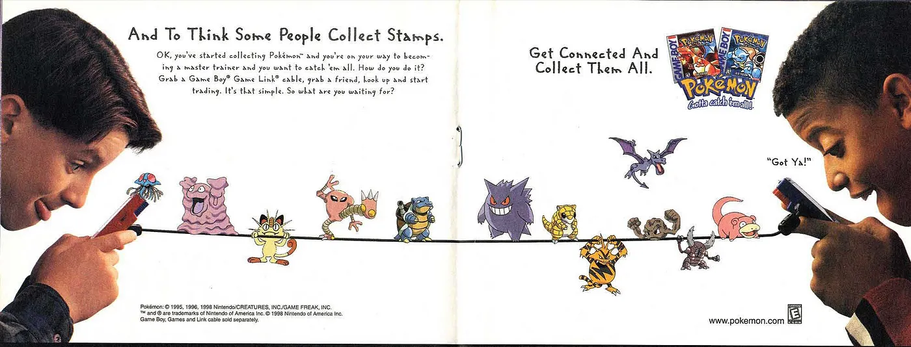

un digital orto. what will your verse be?
l’orto serve a me per raccogliere un po’ dei dati che creo e tenerli in un posto solo. qua quello che leggo: libri e non libri. poi roba che vedo così so dove ritrovarla. qui quello che sto ascoltando in questo momento.
baci,
g
[01/10/25]
nell'anniversario del mio iniziare a lavorare, transizioni
[17/06/25]
l'avremmo fatta noi la Resistenza?
[22/05/25]
with an Apple Macintosh
you can't run Radio Shack programs
in its disc drive.
nor can a Commodore 64
drive read a file
you have created on an
IBM Personal Computer.
both Kaypro and Osborne computers use
the CP/M operating system
but can't read each other's
handwriting
for they format (write
on) discs in different
ways.
the Tandy 2000 runs MS-DOS but
can't use most programs produced for
the IBM Personal Computer
unless certain
bits and bytes are
altered
but the wind still blows over
Savannah
and in the Spring
the turkey buzzard struts and
flounces before his
hens.
C. Bukowski, 16-bit Intel 8088 chip
[12/07/24]
If you are lucky enough to have lived in Paris as a young man, then wherever you go for the rest of your life it stays with you, for Paris is a moveable feast.
E. Hemingway, A Moveable Feast
[23/04/24]
ho scritto del Game Boy sulla newsletter di Lorenzo.

[09/03/24]
novità: se vuoi ricevere aggiornamenti dall'orto inserisci qui sotto la tua mail. non so ancora che ci farò ma mi farebbe piacere!
[24/01/24]
Hello, I'm Macintosh. It sure is great to get out of that bag.
ho scritto del 40º anniversario del Mac sulla newsletter di Lorenzo.
[19/10/23]
Technology is built by a virtual United Nations of talent from all over the world. Anyone with a positive attitude and a cheap laptop can contribute. Technology is the ultimate open society.
M. Andreessen, The Techno-Optimist Manifesto
[04/10/23]
arrabbiarsi. vale la pena?
[26/09/23]
ho scritto sulla newsletter di Lorenzo.
"The problem was, you can’t ask Aristotle a question. And I think, as we look towards the next fifty to one hundred years, if we really can come up with these machines that can capture an underlying spirit, or an underlying set of principles, or an underlying way of looking at the world, then, when the next Aristotle comes around, [...] after this person’s dead and gone, we can ask this machine, “Hey, what would Aristotle have said? What about this?” (S. Jobs)
[18/05/23]
lavoro: "Se si escludono istanti prodigiosi e singoli che il destino ci può donare, l’amare il proprio lavoro (che purtroppo è privilegio di pochi) costituisce la migliore approssimazione concreta alla felicità sulla terra: ma questa è una verità che non molti conoscono." (P. Levi)
[17/05/23]
There’s an old joke that says “AI” is what we call anything a computer can’t do yet. (Or perhaps has only just started doing.)
[02/05/23]
Consider a future device for individual use, which is a sort of mechanized private file and library. It needs a name, and to coin one at random, "memex" will do. A memex is a device in which an individual stores all his books, records, and communications, and which is mechanized so that it may be consulted with exceeding speed and flexibility. It is an enlarged intimate supplement to his memory.
V. Bush, As We May Think
[06/04/23]
riorientamento: "What is to be done?" (V. Lenin)
[14/03/23]
mille euro: ho dato duemila euro (mille miei, mille adam) all'idraulico. questi i pensieri razionali e irrazionali prima di sapere se/quanto la proprietaria pagherà.
[16/01/23]
going down the stairs when i had worked well, and that needed luck as well as discipline, was a wonderful feeling and i was free then to walk anywhere in paris.
E. Hemingway, A Moveable Feast
[08/01/23]
We cast this message into the cosmos [...]: This is a present from a small distant world, a token of our sounds, our science, our images, our music, our thoughts, and our feelings. We are attempting to survive our time so we may live into yours. We hope some day, having solved the problems we face, to join a community of galactic civilizations. This record represents our hope and our determination and our goodwill in a vast and awesome universe.
Jimmy Carter, Voyager Golden Record
[28/12/22]

sentendomi festivo
[10/12/22]
Something about the interior life of a computer remains infinitely interesting to me; it’s not romantic, but it is a romance. You flip a bunch of microscopic switches really fast and culture pours out.
P. Ford, Why I Still Love Tech
[05/12/22]
He tried to shoot his way through life with a couple of guns and he lost... But he tried
W. Guthrie, Jesse James
[30/11/22]
Così sempre corre il giovane verso la donna: ma è davvero amore per lei a spingerlo? O non è amore soprattutto di sé, ricerca d’una certezza d’esserci che solo la donna gli può dare?
I. Calvino, Il Cavaliere Inesistente
[24/11/22]
qui sotto dove mi piacerebbe essere ora.
baci,
g

Dragon's Back, Hong Kong